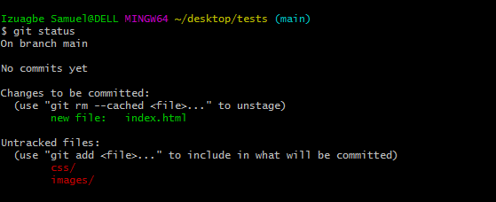
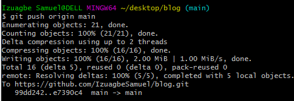

April 23, 2021 | By Izuagbe Samuel
GitHub is a trending and a very popular public gathering for Developers. It's where millions of developers contribute to the future of software, contributing to the open source of millions of public and private codes. Using Git Bash as an application for Microsoft Windows environment to make changes to you GitHub account.
Is a command prompt navigator or a control system that allows users to navigate through your system to make files, remove files, make a directory, and take snapshot of our codes to GitHub.
In this blog I'll be talking about various Git commands:
We'll also deal with some commands that helps us navigate through the computer:
This command sets the author name and email address globally when commit.
Command Line: git config --global user.name "[name]"
Command Line: git config --global user.email "[email]"
When we commit our codes, (I know you're wondering what commit is we'll talk more about it later in this blog) we want our names or credential to be authored by us. git config sets our names and email to be the author of any code we commit.
This command is used to start a repository. Using git init means initializing the git files in you directory or folder when starting a repository.
Command Line: git init
This command add a file to the staging area. This is normally done after you might have edited that file.
Command Line: git add [file name]

Command Line: git add .
This command adds more than one files to the staging area

This command records or snapshots the file permanently in the version history.
Command Line: git commit -m "[Your commit message goes here]"
This command list out all the files that have been committed.
Command Line: git status
This command deletes the file from your working directory and stages the deletion.
Command Line: git rm [file name]

This command is basically used to list the version history for the current branch. It also shows the date, time, author, branch, and the commit message you made.
Command Line: git log

This command shows the changes of the specified commit and the metadata.
Command Line: git show [ The commit you made ]

This command lists all the local branches in the repository.
Command Line: git branch
.png)
This command creates a new branch.
Command Line: git branch [ Branch name ]
.png)
This command deletes a branch.
Command Line: git branch -d [ Branch name ]
.png)
This command is used to sign in from one branch to another.
Command Line: git checkout [ Branch name ]
.png)
This command creates a new branch and also switches to it.
Command Line: git checkout -b [ Branch name]
.png)
This shows the differences which are not yet staged in the working file.
Command Line: git diff
This command shows the differences between the files in the latest version present from the previous staging area.
Command Line: git diff -staged
This command is used to give tags to the specified commit.
Command Line: git tag [Commit ID]

This command is used to move all committed changes of main branch to your working repository.
Command Line: git push [origin name] main
Note: The above command moves ALL the working files to your repository after you git add . & git commit -m "[your commit message]".The main branch is the default branch so you cannot push without having a branch
If by any means you have various branches in your git directory you can use the bellow command to push just a branch, if that is what you want but Reminder:The above command pushes all committed changes to the repository but the command bellow pushes just a single brach if in case you have multiple branches.
Command Line: git push [origin name] [branch name]
The above command pushes just the single branch.
Command Line: git push -all [origin name]
The above command pushes all branches to your remote repository.
Command Line: git stash save
The above command temporarily stores all the modified tracked files.
Command Line: git stash pop
The above command line restores the most recent stashed files.
Command Line: git stash list
The above command lists all stashed change sets.
Command Line: gut stash drop
The above command discards the most recently stashed change sets
Command Line: git remote add [origin name] [remote server link]
The above command is used to connect your local repository to the remote server.

Command Line: git reset [file]
The above command will unstage the file, but it will not affect the file content

Command Line: mkdir[directory name]
As the name goes mkdir(make directory) this command is used to make a directory/folder in your computer. mkdir is used to make a folders in a working directory, appending it with the directory name.
Tips: When naming a directory, spacing isn't allowed. When this rule is violated Git automatically makes a directory for each words. Instead signs are used to separate words. For example(intro-git)
Naming in Git Terminal is very important, making mistakes while naming a directory can make our entire files be a drag to us and we won't want that to happen
Command Line: cd[directory name]
This command is used to change directory - i.e moving from one directory to another. Just to make it clear, there's a difference between a directory and a file. A directory can be called a folder in local language. To move to another directory, you need to make sure that directory already exists
Below is an example of how a directory looks like
In the above image the alighted part are all directories(C:/DELL/Desktop/intro-git). That basically means that our global directory that is the computer initial repository where all the files in the computer are saved C:. then the backward slash sign means that what ever is coming next is located inside the previous repository. DELL is a repository inside the Local Disk, then inside our DELL directory our Desktop directory is located
.For reference purpose it is wise to create all our coding directories in our desktop repository
. Not to worry we'll go in depth with it when we gwt to pwd(present working directory)In the above images we created another directory to help us navigate through it, like I said you can only cd when the directory exists.
Command Line: touch[file name]
This command is used to make files in a directory. e.g (html, css, pdf, md, py, php, js). Those files extensions are examples of files you can make using touch in the Git bash.
In the above image, we created a directory named git-bash i.e remember how to name a directory? ok yea! a quick reminder. We created the directory inside another directory called desktop. Then we changed the directory to the directory we created. Finally we created a index.html file using the touch command.
Command Line: pwd
The above command is used to know the working directory we are working on. Present Working Directory
Just as I explained earlier about directories, you can use the pwd to know your working directories.
Command Line: rmdir[directory name or file name]
The above command is used to remove a directory or a file from another directory. rmdir (Remove Directory)
In hte Image